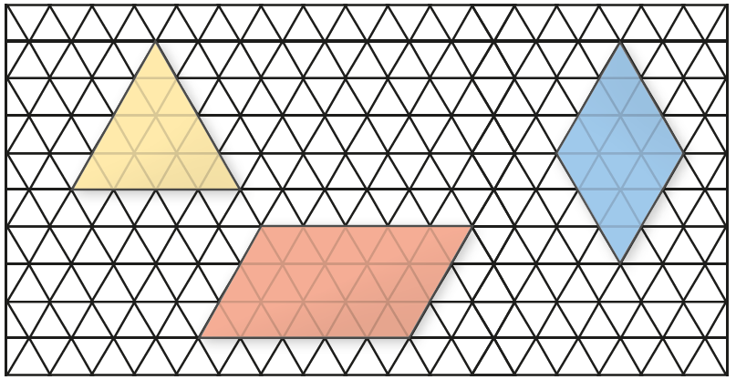
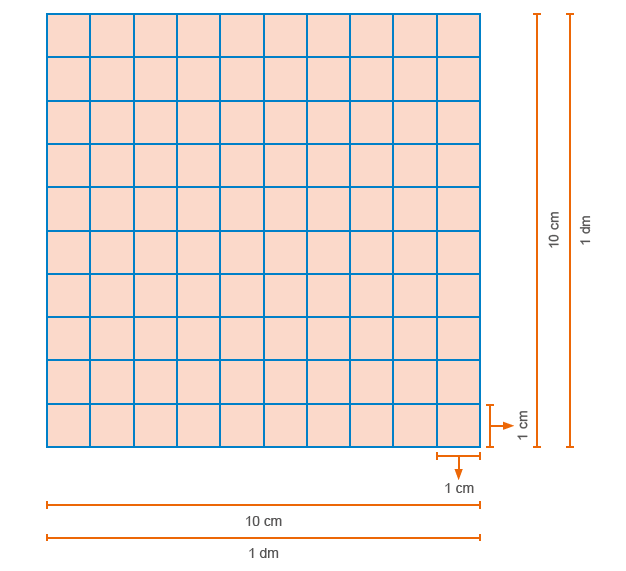
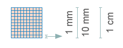
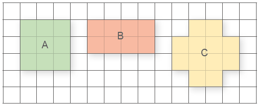

CAPÍTULO 2 - Áreas
Conceito de medidas de superfície
Na malha triangular abaixo, representamos 3 polígonos.
Esses polígonos são figuras geométricas planas. Podemos calcular as medidas de suas superfícies comparando grandezas da mesma espécie. Usando um Δ, o qual chamaremos de u, como unidade de medida, vamos calcular a medida da superfície de cada polígono.

1. Troque ideias com um colega e utilizando o Δ como unidade de medida, no caderno, indiquem qual a medida de superfície de cada polígono.
Ao realizar essas medições, estamos calculando a área de cada polígono usando o Δ como unidade de medida.
A medida de uma superfície é chamada de área.
Metro quadrado
Em jornais e revistas é comum encontrarmos anúncios de venda de imóveis. Observe a seguir dois desses anúncios.
254
UNIDADE 7 - CAPÍTULO 2
Anúncio 1
Apartamento - 2 Quartos - 1 vaga de garagem - 98 m² de área total sendo 66 m2 de área privativa - R$ 350.000,00
Corretores de imóveis oferecem para venda excelente apartamento, todo decorado e mobiliado, com 2 dormitórios, WC privativo e mais WC social, sala ampla, cozinha com área de serviço conjunta, ou seja, não tem divisória entre a cozinha e a área de serviço. Varanda com churrasqueira a carvão.
Anúncio 2
Casa - 3 Quartos - Terreno com 210 m² - R$ 375.000,00
Casa de alvenaria com aproximadamente 130 m². Possui 3 dormitórios com piso cerâmico, sendo 1 suíte com hidromassagem, sala de estar com lareira, sala de jantar, WC social, copa, cozinha, churrasqueira e forno a lenha, lavanderia e espaço para 4 carros, sendo 2 vagas cobertas.
Nos dois anúncios temos a área útil de cada imóvel. A unidade-padrão para medir uma superfície no sistema métrico decimal é o metro quadrado (m²). Porém, quanto representa essa medida? Vamos fazer essa verificação.
1. Em dupla, separem algumas folhas de jornais e, com o auxílio de uma trena e fita adesiva, construam um quadrado com 1 metro de lado. Depois, façam uma estimativa de quantos metros quadrados possui a sala de aula.

Múltiplos e submúltiplos do metro quadrado
Algumas vezes o metro quadrado não é a unidade mais prática para medir a área de uma superfície. Por isso, precisamos utilizar os múltiplos e submúltiplos do metro quadrado. Veja o mapa do Brasil e sua superfície.
De acordo com o IBGE, a superfície do Brasil é de 8 515 767 049 km2.
UNIDADE 7 - CAPÍTULO 2
255
Você observou que para indicar a área do território brasileiro utilizamos o quilômetro quadrado, que corresponde à superfície de um quadrado com 1 km de lado. Temos que 1 km² corresponde a 1 000 000 m².
Já para indicar, por exemplo, a superfície de um polígono, podemos utilizar os submúltiplos do metro quadrado, como o decímetro quadrado, centímetro quadrado ou milímetro quadrado. Observe a relação existente entre essas medidas.
Note que 1 dm² corresponde a 100 cm².
Note que 1 cm² corresponde a 100 mm².
256
UNIDADE 7 - CAPÍTULO 2
Na tabela a seguir, temos o símbolo utilizado para representar as unidades de medida de superfície e o valor de cada uma delas em relação ao metro quadrado.


ENCONTRE SOLUÇÕES
1. Observe a malha quadriculada abaixo. Utilizando o □ como unidade de medida (u), no caderno, indique a área de cada um dos polígonos.
![Malha quadriculada com quatro polígonos nomeados de A, B, C, D. A letra A, à esquerda, é um octógono azul. Dentro de quatro linhas e quatro colunas da malha quadriculada, ele ocupa na linha 1, da esquerda para a direita: meio quadro, dois quadrados inteiros e meio quadrado. A linha 2 e 3 são preenchidas por ele e a linha 4 é igual à primeira. A letra B, ao centro, é um triângulo isósceles laranja. Ele está dentro de três linhas e três colunas da malha quadriculada. A letra C, na parte debaixo da malha quadrada, é um retângulo na vertical amarelo. Ele ocupa 2 colunas e quatro linhas. A letra D, na parte inferior da malha, é uma figura em forma de uma seta na cor verde com a ponta para a direita. Ela é um retângulo horizontal com a linha quadriculada da malha passando no centro dela. A ponta é um triângulo apontado para a esquerda, sendo que metade dele ocupa metade de um quadrado, tanto na parte de cima como na debaixo.](../../resources/images/2591.PNG)
2. Qual unidade de medida seria mais apropriada para medir a área em cada uma das situações a seguir?
a) Um campo de futebol.
b) Uma folha A4.
c) A quadra poliesportiva da escola.
d) A sua cidade.
3. Na malha quadriculada a seguir, considere que cada quadradinho tem 1 cm² de área.
a) Determine o perímetro de cada um dos polígonos dessa malha quadriculada.
b) Agora, calcule a área dos polígonos dados.
c) Qual polígono apresenta a maior área? E o maior perímetro?
d) Escreva a área dos polígonos em mm².
UNIDADE 7 - CAPÍTULO 2
257
4. Utilizando 4 quadrados idênticos de 1 cm de lado e 1 cm² de área, podemos construir as seguintes figuras:
![Quatro figuras na cor rosa nomeadas de A, B, C e D. A letra A é uma barra na horizontal formada por quatro quadrados. A letra B é um quadrado. Ele ocupa dois quadrados em cima e dois embaixo. A letra C tem dois andares. No primeiro andar é um quadrado, no segundo ocupa três quadrados. A letra D tem 3 andares. Um quadrado, na parte de cima, dois quadrados no andar central e um quadrado no andar baixo. À direita uma tabela para ser preenchida com as 4 figuras mencionadas: A tabela tem quatro linhas. A linha 1: Figura. Perímetro. Área. Linha 2: Letra A e os outros espaços em branco. Linha 3: Letra B e os outros espaços em branco. Linha 4: Letra C e os outros espaços em branco.](../../resources/images/260.PNG)
a) Em seu caderno, complete a tabela.

b) Podemos afirmar que sempre que duas ou mais figuras geométricas tiverem a mesma área os seus perímetros serão iguais? Por quê?

5. (OBMEP) Os quadrados abaixo têm todos o mesmo tamanho.
![Cinco figuras quadradas nomeadas de I, II, III, IV, V. Na I o quadrado é dividido em quatro triângulos com os vértices apontados para o centro. As áreas sombreadas são os triângulos das laterais direita e esquerda. Na II, o quadrado é dividido ao meio na diagonal, formando dois triângulos. A área sombreada está no triângulo da esquerda. Na III, o quadrado é cortado também na diagonal, com a linha voltada mais para a esquerda e com a área sombreada à esquerda. Na IV, a linha sombreada forma um triângulo isósceles. O vértice se encontra no centro do quadrado. Na V, o quadrado é cortado na diagonal, com a linha mais voltada para a direita.](../../resources/images/2605.PNG)
Em qual deles a região sombreada tem a maior área?
a) I
b) II
c) III
d) IV
e) V
6. (OBMEP) A figura representa um retângulo de área 36 m², dividido em três faixas de mesma largura. Cada uma das faixas está dividida em partes iguais: uma em quatro partes, outra em três e a terceira em duas. Qual é a área total das partes sombreadas?
a) 18 m²
b) 20 m²
c) 22 m²
d) 25 m²
e) 26 m²
258
UNIDADE 7 - CAPÍTULO 2